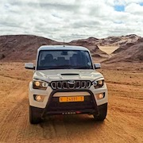

Privat geführte Namibia-Reisen
Individuell für Ihre Familie oder Kleingruppe geplant und von mir persönlich durchgeführt
Mein Angebot
Ich biete für Sie als Paar, Familie oder Gruppe von Freunden maßgeschneiderte privat geführte Touren mit Hotel- und Lodge-Unterkünften sowie Camping-Safaris an. Ich bereise ganz Namibia, auf Anfrage auch das Okavango-Delta in Botswana, die Victoriafälle in Simbabwe sowie Südafrika. Als absoluter Namibia-Insider kenne Ich die schönsten und interessantesten Stellen des Landes.
Von der Beratung zur Planung und später über die Buchung bis zur Tour selbst bin ich persönlich für Sie da.
Tourbeispiele
Habe ich Sie neugierig gemacht? Dann schauen Sie sich meine Beispieltouren an:
Wichtig: hierbei handelt es sich nur um Beispiele! Bei mir ist alles individuell an Ihre Wünsche angepasst, denn Ihr Urlaub soll einzigartig werden – er soll zu Ihnen passen und nicht umgekehrt.
Fahrzeuge
Ich besitze einen Landrover Discovery, ein sehr bequemer Wagen, den ich für meine Lodge-Touren gebrauche. Außerdem habe ich auch noch einen Nissan Doppelkabiner-Geländewagen, den ich für meine Camping-Touren gebrauche – sehr zuverlässig und mit viel Stauraum für die Camping-Ausrüstung. Falls Ihre Gruppe aus mehr als 4 Personen besteht, miete ich mir einen Wagen. Dabei arbeite ich nur mit erfahrenen und äußerst zuverlässigen Autovermietungen zusammen.
Meine Autos durchlaufen jedes Jahr eine "Certificate of Fitness"-Prüfung (vergleichbar mit dem TÜV). Ich fahre zudem mit Reifendrucksensoren: es gibt ein Signal, sobald der Luftdruck fällt.
Unterkünfte
Nach oben sind die Preise der Unterkünfte in Namibia offen (+/- 200 €/Pers/Nacht), überlegen Sie daher, welche Kategorie Sie bevorzugen. Eher preiswert oder luxuriös?
Und je eher Sie sich melden, desto besser stehen die Chancen, dass die passenden Unterkünfte verfügbar sind (Juli, August und September: ein Jahr im Voraus).
Relativ neu sind meine sogenannten "Glamping"-Touren: hier liegt der Fokus auf Unterkünften mit Zelten, die schon stehen. Der Vorteil gegenüber einer "richtigen" Campingtour mit eigenem Equipment ist hier, dass es deutlich stressfreier ist (weil wir nicht ständig Zelte auf- und abbauen müssen und in richtigen Betten schlafen statt auf Luftmatratzen), und trotzdem Camping-Feeling aufkommt. Diese Unterkünfte sind oft sehr schön mitten in der Natur gelegen.
Camping
Camping sieht bei mir folgendermaßen aus: Ich habe Igluzelte, in denen man gerade stehen kann, dann bekommt jeder eine Bettrolle, bestehend aus Matratze, Schlafsack und Kopfkissen (beides frisch bezogen) und einem Handtuch. Ich habe auch Feldbetten für diejenigen, die gerne unter freiem Himmel (im "Millionen-Sterne-Hotel") schlafen möchten. Camping-Stühle und -Tisch habe ich auch für Sie dabei.
Ich koche für Sie (Lagerfeuer oder Gas), und erwarte lediglich bei der Vorbereitung und beim Lagerleben Ihre Hilfe. An den richtig wilden Plätzen gibt es kein Wasser oder Toilette, dann führe ich Wasser mit für eine Katzenwäsche, und eine Feldtoilette wird hinter einem Busch oder anderem Blickfang errichtet. Ich lege die Routen so, dass wir jeden zweiten Tag frisches Wasser mitnehmen können.
Zu solch einem Campleben gehört unheimlich viel Ausrüstung, daher bitte ich Sie, Ihr persönliches Gepäck zu begrenzen und in Knautsch-Taschen zu verstauen, Koffer sind sehr sperrig und nicht für eine Camping-Tour geeignet.